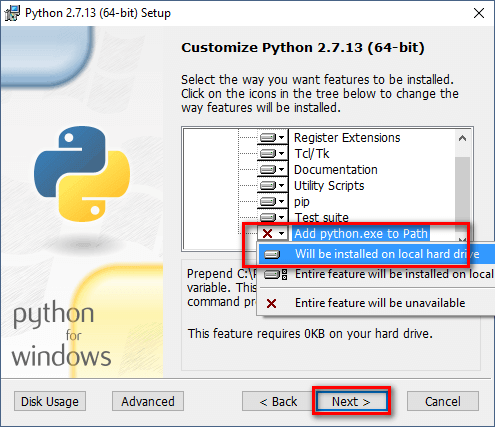

How to Install Python on Windows
Download python from https://www.python.org/downloads/
Python does not come prepackaged with Windows, but that does not mean Windows users will not find the flexible programming language useful. It is not quite  simple as installing the newest version however, so let us make sure you get the right tools for the task at hand.
First released in 1991, Python is a popular high-level programming language used for general purpose programming. Thanks to a design philosophy that emphasizes readability it has long been a favorite of hobby coders and serious programmers alike. Not only is it an easy language (comparatively speaking, that is) to pick up but you will find thousands of projects online that require you have Python installed to use the program.
Which Version Do You Need?
Unfortunately, there was a significant update to Python several years ago that created a big split between Python versions. This can make things a bit confusing to newcomers, but do not worry. We will walk you through installing both major versions
When you visit the Python for Windows download page, you will immediately see the division. Right at the top, square and center, the repository asks if you want the latest release of Python 2 or Python 3 (2.7.13 and 3.6.1, respectively, as of this tutorial).
You can download just Python 2 or Python 3 if you are sure you only need a particular version. We are going the distance today and will be installing both of them, so we recommend you download both versions and do the same.Under the main entry for both versions you will see an x86-64 installer, as seen below.
This installer will install the appropriate 32-bit or 64-bit version on your computer automatically .
How to Install Python 2
Installing Python 2 is a snap, and unlike in years past, the installer will even set the path variable for you (something we will be getting into a bit later).
1.Download and run the installer, select Install for all users, and then click Next.
2.On the directory selection screen, leave the directory as Python27 and click Next.
3.On the customization screen, scroll down, click Add python.exe to Path, and then select Will be installed on local hard drive. When you are done, click Next.

You do not have to make any more decisions after this point. Just click through the wizard to complete the installation. When the installation is finished, you can confirm the installation by opening up Command Prompt and typing the following command:
Python -V
Success! If all you need is Python 2.7 for some project or another, you can stop right here. It is installed, the path variable is set, and you are off to the races.
How to Install Python 3
If you want to learn the newest version of Python, you will need to install Python 3. You can install it alongside Python 2.7 with no problems, so go ahead and download and run the installer now.
1.On the first screen, enable the Add Python 3.6 to PATH option and then click Install Now.

2.Next, you have a decision to make. Clicking the Disable path length limit option removes the limitation on the MAX_PATH variable. This change will not break anything, but will allow Python to use long path names. Since many Python programmers are working in Linux and other unix systems where path name length is not an issue, turning this on in advance can help smooth over any path related issues you might have while working in Windows.
We recommend go ahead and select this option. If you know you do not want to disable the path length limit, you can just click Close to finish the installation.
If you are only installing Python 3, you can use the same command line trick of typing python -v that we used above to check that it is installed correctly and the path variable is set. If you are installing both versions, however, you need to make the quick tweak found in the following section.
Adjust System Variables So You Can Access Both Python Versions From the Command Line
This section of the tutorial is completely optional, but will allow you to quickly access both versions of Python from the command line. After installing both versions of Python, you may have noticed a little quirk. Even though we enabled the system path for both Python installations, typing python at the command prompt only points you to Python 2.7.
The reason for this is simple: the variable (whether automatically adjusted by an installer or manually tweaked) simply points at a directory, and every executable in that directory becomes a command line command. If there are two directories listed and both have a python.exe file in them, whichever directory is higher in the list of variables gets used. And, if there is a variable set for the system and the user, the system path takes precedence over the user path.
The latter is exactly what is happening in this case: the Python 2 installer edited the system wide variable and the Python 3 installer added a user level variable and we can confirm this by looking at the Windows environment variables.
Hit Start, type advanced system settings, and then select the View advanced system settings option. In the System Properties window that opens, on the Advanced tab, click the Environment Variables button.
Here, you can see Python 3 listed in the User variables section and Python 2 listed in the System variables section.
There are a few ways you can remedy this situation. The simplest (albeit the one with the least functionality) is to just remove the entry for the version of Python you plan on using the least. While that is simple, it is also not very much fun. Instead we can make another change that will give us access to python for Python 2 and python3 for Python 3.
To do this, fire up File Manager and head to the folder where you installed Python 3 (C:\Users\[username]\AppData\Local\Programs\Python\Python36 by default). Make a copy of the python.exe file, and rename that copy (not the original) to python3.exe.
Open a new command prompt (the environmental variables refresh with each new command prompt you open), and type python3-version.
Boom! You can now use the python command at the Command Prompt when you want to use Python 2.7 and the python3 command when you want to use Python 3.
After a little installing and a little tweaking, you have both versions installed and you are ready for whatever Python project you want to tackle.
All Done